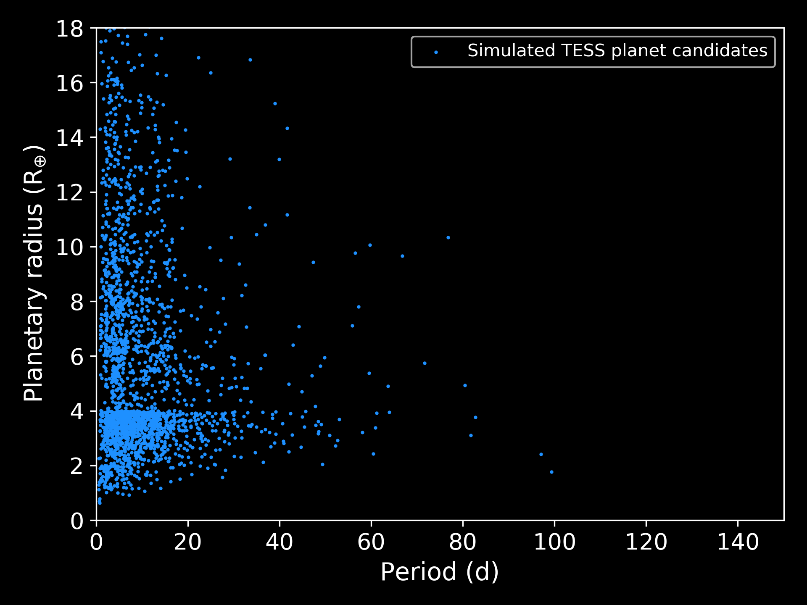
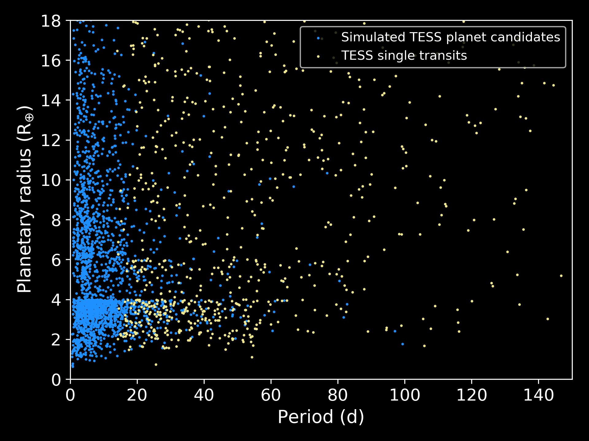
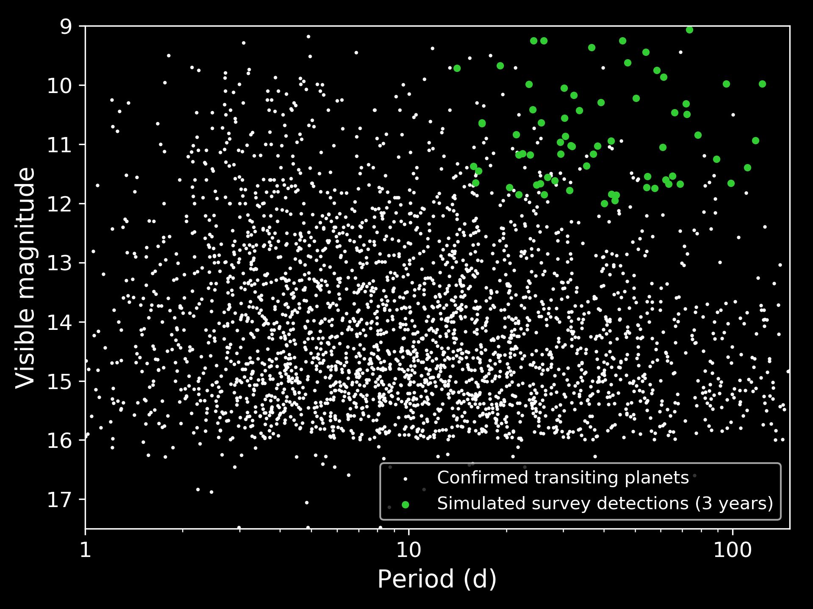

One Hit Wonders
Menu
Home
About
Who we are
One Hit Wonders
Recovering the longest
period TESS planets
Learn More
TESS
will find thousands of planets
that transit bright stars.
Continue

But most of these planets will have short periods,
and orbit close to their host stars.
Continue

TESS will observe a thousand long-period planets transit just once.
Without follow-up observations, most of these planets will be lost.
Continue
The
One Hit Wonders
survey
is hunting the TESS single tranets.*
*But why?
Few long-period planets are known that orbit bright stars.
Continue

One Hit Wonders
will help find these planets.
Studying these systems could tell us a lot about the atmospheres of cooler exoplanets.
Continue
We begin this summer.
Who we are
One Hit Wonders is:
PI: Carl Ziegler
Suresh Sivanandam
Adam Butko
Emily Deibert
Masen Lamb